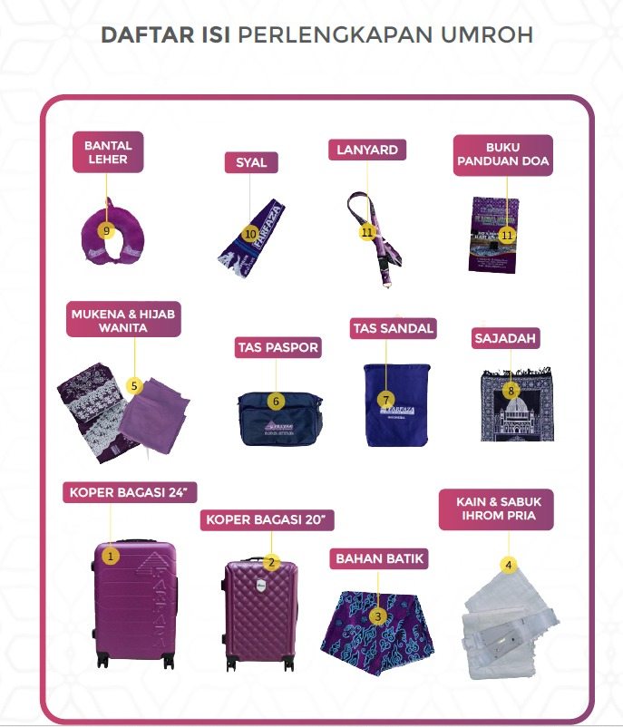
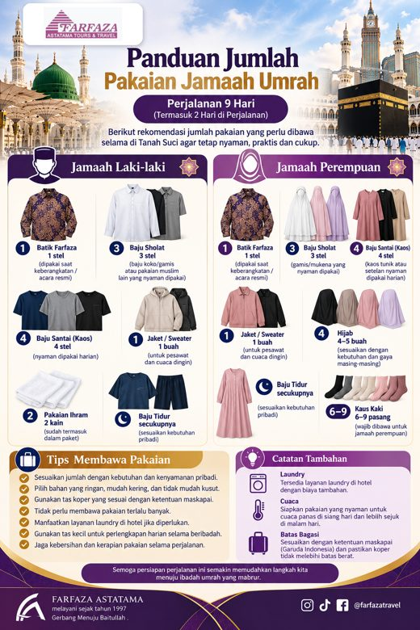
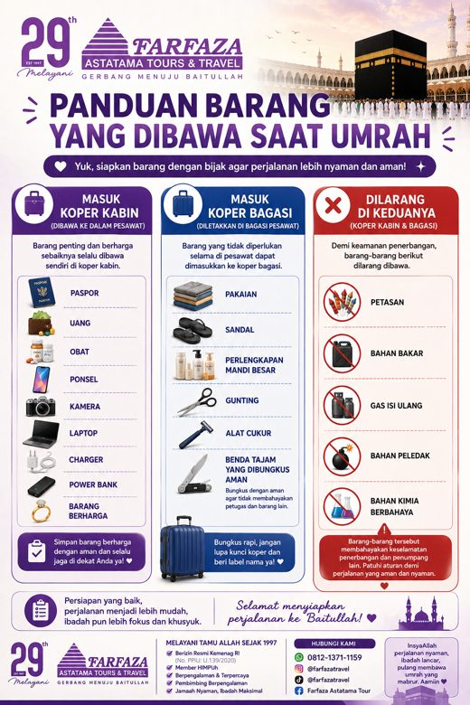
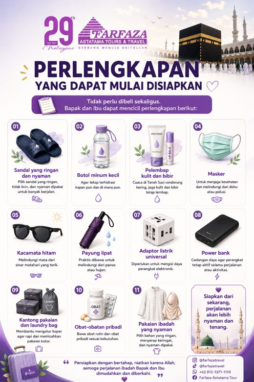

Tidak bisa ditebus dengan dam
Rukun yang belum dikerjakan harus dilengkapi. Thawaf atau saʻi yang kurang putaran, misalnya, wajib disempurnakan. Selama belum lengkap, umroh belum sah.

Latihan manasik
Kenali tata cara thawaf, sa'i, dan tahalul secara interaktif.
Pahami dulu sebelum berlatih
Umroh punya tiga lapis amalan. Mengetahui bedanya membuat ibadah lebih tenang dan terarah, dan Anda tahu persis mana yang tidak boleh terlewat.
Ditinggalkan satu saja, umroh tidak sah dan harus diulang.
Ditinggalkan, umroh tetap sah tetapi wajib membayar dam (menyembelih kambing).
Ditinggalkan, umroh tetap sah dan tanpa dam. Dikerjakan, pahalanya bertambah.
Berniat umroh dan mengenakan pakaian ihram dari miqat. Pria dua helai kain putih tak berjahit, wanita pakaian menutup aurat.
Lafaz niat: Labbaika ʻumratanTujuh putaran mengelilingi Kaʻbah, Kaʻbah di sisi kiri, dimulai dan diakhiri di Hajar Aswad.
7 putaranBerjalan tujuh kali antara bukit Shafa dan Marwah, mulai dari Shafa dan berakhir di Marwah.
7 lintasanMencukur atau memotong rambut sebagai tanda selesainya umroh. Pria dianjurkan gundul, wanita memotong sekitar satu ruas jari.
Minimal 3 helaiSemua rukun dikerjakan sesuai urutan di atas, dari ihram sampai tahallul.
Tidak boleh terbalikWajib umroh
Larangan ihram yang paling sering ditanyakan
Sunnah umroh
Uraian mengikuti pendapat mazhab Syafiʻi yang lazim di Indonesia. Pembimbing Farfaza akan memandu detailnya di lapangan, termasuk bila ada perbedaan pendapat antar mazhab.
Bila ada yang terlewat atau terlanggar
Dam adalah denda atas kesalahan dalam ihram. Besar kecilnya bergantung pada jenis kesalahan, dan tidak semua kesalahan bisa ditebus dengan denda.
Rukun yang belum dikerjakan harus dilengkapi. Thawaf atau saʻi yang kurang putaran, misalnya, wajib disempurnakan. Selama belum lengkap, umroh belum sah.
Contohnya berniat ihram setelah melewati miqat dan tidak kembali ke miqat.
Untuk wewangian, memotong kuku atau rambut, pria memakai pakaian berjahit atau menutup kepala.
Rincian di atas mengikuti mazhab Syafiʻi (rujukan: Al-Majmuʻ karya An-Nawawi, sebagaimana diuraikan NU Online). Kesalahan karena lupa atau tidak tahu pun sebaiknya ditanyakan ke pembimbing, karena ulama berbeda dalam rinciannya.
Latihan manasik
Gerakkan sendiri jamaahnya mengelilingi Ka'bah, berjalan Shafa–Marwah, lalu bertahalul. Putaran dihitung otomatis dan kesalahan langsung dikoreksi.
Alat bantu belajar ini tidak menggantikan bimbingan muthawwif. Ikuti manasik resmi bersama pembimbing Farfaza.
Persiapan koper
Dari perlengkapan yang Farfaza siapkan, pembagian isi tas kecil dan koper besar, sampai jumlah pakaian, supaya Anda tidak tertahan di bandara dan tidak kelebihan barang.

Paspor Anda disimpan Farfaza setelah visa terbit dan diserahkan di bandara dengan tanda terima.
Barang penting dan berharga sebaiknya selalu Anda bawa sendiri.
Barang berikut harus pindah ke koper bagasi.
Batas berat koper kabin umumnya 7 kg. Angka resmi untuk program Anda disampaikan di grup keberangkatan. Simpan barang berharga dengan aman dan selalu dekat dengan Anda.
Barang yang tidak diperlukan selama di pesawat.
Simpan di tas kabin atau di badan Anda.
Kunci koper dan beri label nama. Batas berat bagasi mengikuti maskapai pada program Anda; sebagai acuan, jamaah haji Indonesia dibatasi 32 kg.
Demi keselamatan penerbangan dan penumpang lain.
Dilarang masuk Arab Saudi
Rekomendasi untuk perjalanan 9 hari, termasuk 2 hari di perjalanan. Sesuaikan dengan kebutuhan dan kenyamanan pribadi.
Tidak perlu dibeli sekaligus, bisa dicicil dari sekarang. Centang yang sudah masuk koper; daftar ini hanya tersimpan di layar Anda.
Simpan di ponsel atau kirim ke keluarga yang ikut berangkat.

Panduan jumlah pakaianUnduh gambar
Barang yang dibawa saat umrohUnduh gambar
Perlengkapan yang mulai disiapkanUnduh gambarAturan penerbangan bisa berubah. Pegangan utama Anda adalah informasi di grup keberangkatan resmi dan arahan petugas Farfaza di bandara.
Chat WhatsApp